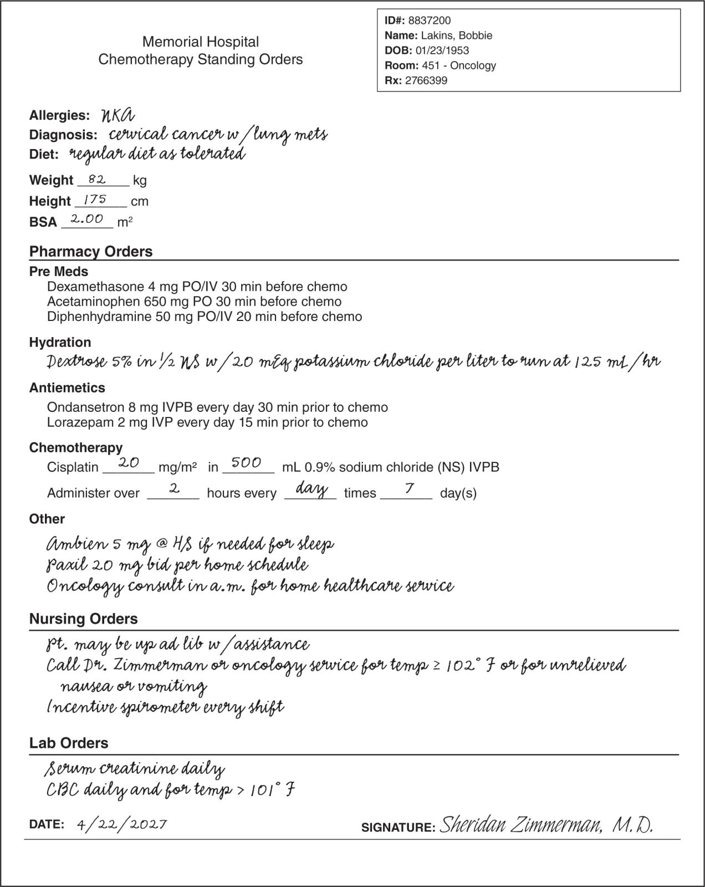
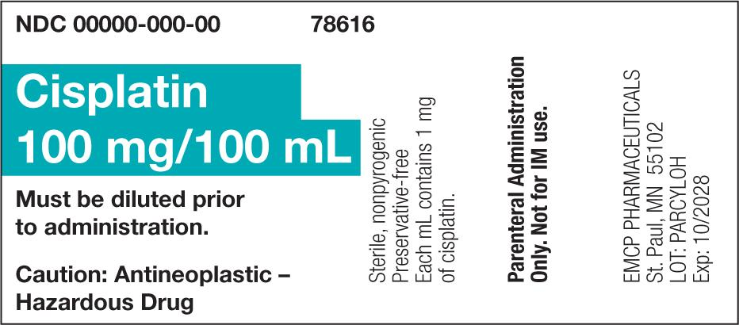
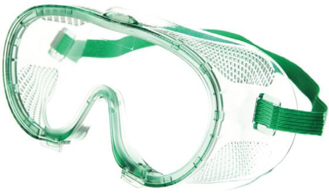
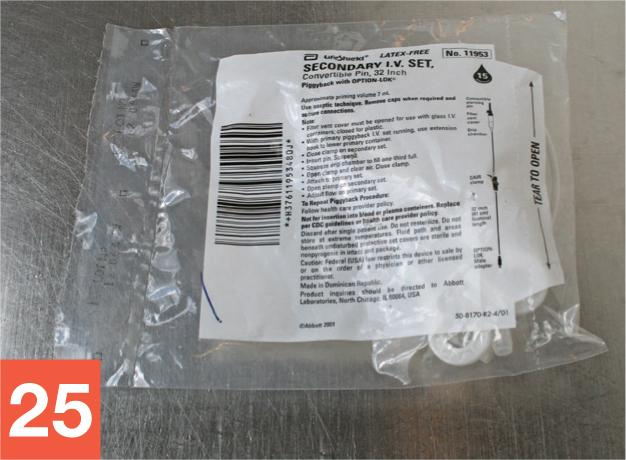
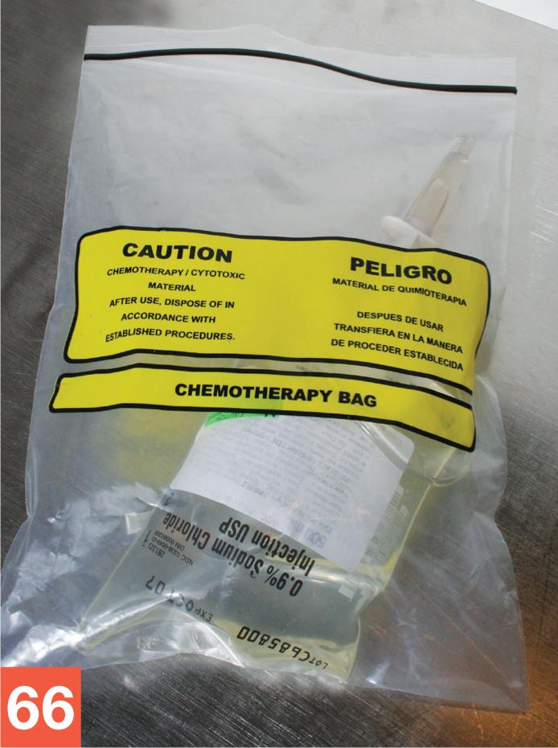

PART 2: TRAINING
16.16 Procedural Lab
This lab walks you through the step-by-step actions that you must follow to properly prepare a chemotherapy CSP using a vertical airflow BSC. Take your time. Work through each step methodically and with close attention to detail.
Note: For the purposes of this procedural lab, you will not perform hand hygiene or BSC deactivation, decontamination, cleaning, and disinfection procedures unless directed to do so by your instructor. Should your instructor ask you to perform these procedures, refer to Chapter 8 for instructions on hand hygiene and to Cirrus for general guidelines related to the deactivation, decontamination, cleaning, and disinfection of the BSC.
Essential Supplies
To complete the Unit 2 procedural labs, you will need to ensure that various essential anteroom and HD buffer room supplies such as those listed in Table 16.2 are available. If you are using a PEC other than a BSC, you will need to alter some procedures to account for the type of PEC, including use of the pass-thru chamber, gauntlet gloves, etc. In this case, refer to instructor direction or facility SOPs for specific instructions regarding this procedural lab.
| Anteroom Supplies |
|---|
|
| Note: As mentioned earlier, the Chapter 16 Procedural Lab does not include steps for performing hand hygiene procedures. If your instructor directs you to perform hand hygiene as part of the Chapter 16 Procedural Lab, you will need access to a sink and hand hygiene supplies. Refer to Chapter 8 for details on hand hygiene procedures. Remember that, in practice, you must perform hand hygiene procedures prior to preparing a CSP in a sterile compounding area. |
| HD Buffer Room Supplies |
|
| Note: As mentioned earlier, the Chapter 16 Procedural Lab does not include steps for BSC deactivating, decontaminating, cleaning, and disinfecting procedures. If your instructor directs you to perform these procedures, you will need sterile, low-lint wipers; sterile water in a pour bottle; a deactivating and decontaminating agent; a one-step disinfectant cleaner; and sterile 70% IPA in a pour bottle. Remember that, in practice, you must perform these procedures at intervals required by USP <797> and USP <800> prior to preparing a chemotherapy CSP in a sterile compounding facility. |
Procedure-Specific Supplies
In addition to the supplies listed in Table 16.2, gather the following items:
- 100 mg/100 mL vial of cisplatin
- 500 mL 0.9% NS IV base solution (with tail injection port)
- plastic-backed preparation mat
- IV tubing
- 60 mL Luer-lock syringe
- chemotherapy dispensing pin
- regular, 19-gauge needles × 2
- tamper-evident, sterile, adhesive seals
- chemotherapy warning auxiliary labels × 2
- chemotherapy transport bag
- chemotherapy CSP label
- chemotherapy medication order.
Procedure
Take a careful, deliberate approach to each detailed step of this procedural lab. In practice, using this approach ensures an appropriate environment for sterile compounding. Refer to instructor directions or facility SOPs to determine whether sterile gloves should be donned in the anteroom or buffer room.
Note: For steps 1–3, refer to Chapter 6 for a reminder of the step-by-step procedures required for medication order and CSP label verification, and to Chapter 7 for pharmacy calculation procedures. For steps 4–8, refer to Chapter 5 and this chapter for a reminder of the process for gathering and staging supplies. For steps 9–20, refer to Chapter 8 for step-by-step hand hygiene and garbing procedures. You should perform steps 1–17 and steps 70–75 in the anteroom. You should perform steps 18–69 in the HD buffer room.
Verifying the CSP Label
- Verify that the CSP label (see Figure 16.4) matches the chemotherapy medication order (see Figure 16.5). Then read the CSP label to determine the desired dose of cisplatin (40 mg) and the type of IV base solution (NS).

View long description Hide description
The label reads as follows: Chemotherapy IVPB, Memorial Hospital, patient name, room, ID number, and RX number. Cisplatin 40 milligrams, NS 500 milliliters, rate: administer IV over 2 hours (250 milliliters per hour), and frequency: daily at 1400 for 7 days. Do Not Refrigerate. This is a compounded preparation. Use Caution: Antineoplastic Agent. Dispose of hazardous material according to chemo procedure. At bottom: BUD, tech, and RPh.
Calculating Desired Volume
- Review the chemotherapy medication order and the CSP label to confirm that the desired dose is accurate and is based on the prescriber’s order and the patient’s BSA.
The patient’s BSA is 2.00 m².
The prescriber ordered cisplatin 20 mg/m².
\[2.00 \, {\color{red}{\cancel{{\rm\color{black}{{m^2}}}}}} \times \frac{{20\,{\rm{mg}}}}{{\color{red}{\cancel{{\rm\color{black}{{m^2}}}}}}} = 2.00 \times 20 = 40\,{\rm{mg}}\,\left( {{\rm{desired \, dose}}} \right)\]

- Read the cisplatin medication label (see Figure 16.6). Perform a ratio and proportion calculation to determine how many milliliters (x mL) of cisplatin are needed to prepare the desired CSP dose.
The cisplatin drug vial states the concentration is 100 mg/100 mL.
The cisplatin dose is 40 mg.
\[\frac{{100\,{\rm{mg}}}}{{100\,{\rm{mL}}}} = \frac{{40\,{\rm{mg}}}}{{x\,{\rm{mL}}}}\]
100 × 40 = 4,000/100 = 40
x = 40 mL (volume of cisplatin needed to prepare the CSP)

Gathering and Staging Supplies
- Place the chemotherapy medication order and the CSP label into the appropriate-sized plastic bags. Gather all the supply items listed in the supply sections of the procedural lab.
- Open the package of low-lint wipers. Remove one or, if necessary, more wipers. Wet the wipers with an appropriate agent—for example, sterile 70% IPA, a one-step disinfectant cleaner, or a sporicidal agent—and thoroughly wipe down the entire transport vehicle. Discard the used wipers into the waste container.
- Before crossing into the clean side of the anteroom, use a new, low-lint wiper presaturated with sterile 70% IPA to wipe the surface of the IV bag’s dust cover. Place the IV bag on the transport vehicle.
- Repeat the procedure outlined in step 6 with each of the remaining supply items.
- Discard the used wipers into the waste container.
Garbing
- Don shoe covers while stepping over the line of demarcation into the clean side of the anteroom. Then don a second pair of shoe covers.
- Don a head cover.
- Don a face mask.
- Don a facial hair cover (if needed).
- Don goggles for eye protection (if needed).
Note: For the purpose of this training lab, you will skip handwashing, unless told otherwise by your instructor.

© George Dolgikh/Shutterstock.com - Don a regular gown and a chemotherapy gown.
- Apply an alcohol-based hand rub to all surfaces of your hands and allow your hands to dry thoroughly.
- Don two pairs of sterile chemotherapy gloves.
- Apply sterile 70% IPA to all surfaces of your gloves and allow your gloved hands to dry thoroughly.
- Bring the transport vehicle containing all of the supply items into the HD buffer room.
- Place the transport vehicle onto a table or cart within the HD buffer room. If a cart is used, position it so that it does not interrupt airflow into the BSC’s prefilter.
- Apply sterile 70% IPA to all surfaces of your gloves and allow your gloved hands to dry thoroughly.
Note: For the purposes of this training lab, you will skip deactivating, decontaminating, cleaning, and disinfecting the BSC, unless told otherwise by your instructor.
Arranging and Preparing Supplies in the BSC
- Place the small chemotherapy sharps container on the work surface within the BSC. Position it on the work surface to the back and side of the cabinet so that it does not obstruct compounding procedures within the cabinet.
- Center the plastic-backed preparation mat onto the work surface of the BSC. The mat is used to absorb sprays or spills.
- Along the other side of the BSC work surface (opposite of the sharps container), place the IV tubing, drug vial, sterile 70% IPA swabs, syringe, capped needle, chemotherapy dispensing pin, and a few low-lint wipers.
- Remove the outer dust cover from the IV bag. Discard the dust cover into the chemotherapy sharps container. Place the IV bag onto the plastic-backed preparation mat centered on the BSC’s work surface. Keep the remaining supply items temporarily in the transport vehicle.
Priming the IV Tubing
- Remove the IV tubing from its outer wrapper. Discard the wrapper into the small chemotherapy sharps container.

© Paradigm Education Solutions - Using your thumb and forefinger, close the clamp on the IV tubing by rolling the clamp downward.
- Temporarily place the IV tubing onto the plastic-backed preparation mat located on the work surface. Remove the plastic cap from the tubing needle adapter. Discard the plastic cap into the chemotherapy sharps container. Without setting down or touching the tubing needle adapter, aseptically attach a capped regular needle to the adapter.
- Remove the pull tag that covers the IV bag tubing port. Discard the removed tag into the chemotherapy sharps container.
- Grasp the drip chamber of the IV tubing with your one hand. Hold the tubing so that the capped tubing spike is pointing toward your other hand. Remove the cap that covers the tubing spike, and without touching or setting down the tubing spike, discard the spike cap into the chemotherapy sharps container.
- Continue to hold the drip chamber of the IV tubing with the spike facing your other hand. Do not set the IV tubing onto the work surface. Grasp the tubing port of the IV bag, and without touching or shadowing the tubing spike or IV bag tubing port at any time, aseptically insert the tubing spike into the IV bag port. Twist the spike back and forth to ensure that it is firmly seated inside the IV bag port.
- Pinch and release the tubing drip chamber once or twice to draw a small amount of fluid from the IV bag into the drip chamber.
- Open a sterile 70% IPA swab package, remove the swab, and place it onto the plastic-backed preparation mat. Discard the empty swab package into the small chemotherapy sharps container.
- Hold the IV tubing needle adapter between the thumb and forefinger, approximately one inch behind the attached needle cap. Remove the plastic needle cap (attached to the IV tubing needle adapter on the IV tubing). Place the cap onto the IPA swab that you placed on the plastic-backed preparation mat.
- Continue to hold the IV tubing needle adapter about one inch behind the uncapped needle. Without setting down, touching, or shadowing the tubing needle adapter, position your hand so that the needle tip is held a few inches above the stack of low-lint wipers. Gradually roll up the IV tubing clamp to initiate a slow flow of fluid from the IV bag through the IV tubing.
- As soon as the fluid fills the IV tubing and begins to drip onto the low-lint wipers, stop the flow of fluid by rolling the clamp shut with your thumb and forefinger.
- Pick up the needle cap from its position on the IPA swab, and reattach it to the needle-and-attached-tubing unit.
- Temporarily place the IV bag with attached, filled tubing (and capped needle) onto the BSC’s work surface.
Note: Position these supply items toward one side of the work surface, leaving as much room as possible on the plastic-backed preparation mat.
Preparing the Chemotherapy Vial
- Remove the flip-top cap from the vial of cisplatin and discard the cap into the small chemotherapy sharps container.
- Open a new, sterile 70% IPA swab, remove the swab, and discard the swab’s outer wrapper into the small chemotherapy sharps container. Then wipe the vial stopper with the IPA swab.
- Remove the chemotherapy dispensing pin from its outer wrapper and place the wrapper into the small chemotherapy sharps container.
- Hold the top of the chemotherapy dispensing pin between the thumb and forefinger and, with the other hand, remove the cap from the chemotherapy dispensing pin spike. Continue to hold the dispensing pin and discard the cap into the small chemotherapy sharps container.
- Without setting the chemotherapy dispensing pin onto the work surface, and without touching or shadowing the dispensing pin spike at any time, move your hand so that the spike points toward the palm of your hand. Grasp the cisplatin vial with your other hand and then use a clockwise motion to turn the vial on its side, or approximately 90 degrees to the right. Hold the vial in this position, about three inches above the plastic-backed preparation mat on the work surface.
- While maintaining the 90-degree angle of the vial and the position of the chemotherapy dispensing pin, carefully insert the spike of the dispensing pin into the cisplatin vial stopper.
- Using a counterclockwise motion, return the vial (with attached chemotherapy dispensing pin) to its original, upright position on the plastic-backed preparation mat on the work surface.
- Remove the syringe from its outer wrapper and then discard the wrapper into the small chemotherapy sharps container.
- Grasp the barrel of the syringe and hold it as you would a pencil or dart. If a plastic cap covers the syringe tip, remove the cap and discard it into the small chemotherapy sharps container.
- Without setting the syringe onto the work surface, and without touching or shadowing the syringe tip, continue to grasp the barrel of the syringe with your one hand. Use your other hand to remove the plastic cap that covers the Luer-lock adapter, which is located on the top of the chemotherapy dispensing pin.
- Grasp the vial—attached, uncapped chemotherapy dispensing pin—and carefully turn it clockwise approximately 75 degrees. Carefully attach the syringe tip to the Luer-lock adapter of the chemotherapy dispensing pin.
- Grasp the vial with your one hand and the barrel of the syringe with your other hand. With a clockwise motion, invert the vial approximately 120 degrees from the original, starting position. The syringe should now be slightly below the vial.
- Holding the cisplatin vial, pull down on the flat knob of the syringe plunger until the fluid reaches approximately the 41 mL syringe graduation. Take care to maintain proper airflow from the BSC’s HEPA filter (located in the cabinet’s ceiling) to the critical areas—from the tip of the syringe to the neck of the vial, including the entire chemotherapy dispensing pin and the vial stopper.
George Brainard/© Paradigm Education Solutions
- Stabilize the syringe (with chemotherapy dispensing pin and vial attached) against the palm of your one hand and gently tap the syringe with the fingers of your other hand to force any air bubbles that may have inadvertently transferred from the vial into the syringe toward the tip of the syringe.
- When all air bubbles have risen to the syringe tip, gently push up on the flat knob of the syringe plunger to expel the remaining air and unnecessary fluid back into the vial. Continue gently pushing up on the syringe flat knob until the exact 40 mL dose is reached.
- With a counterclockwise motion, turn the vial so that it is approximately 45 degrees from its original, upright position on the plastic-backed preparation mat. Grasping only the barrel of the syringe, use your hand to remove the syringe from the chemotherapy dispensing pin (i.e., twist the syringe off of the Luer-lock adapter).
- Without setting down the filled syringe and without shadowing or touching the syringe tip, aseptically attach a capped regular needle to the filled syringe.
- Temporarily place the filled syringe with attached, capped regular needle onto the plastic-backed preparation mat. Recap the Luer-lock adapter of the chemotherapy dispensing pin with the cap you placed onto the IPA swab earlier. Place the cisplatin vial with attached, capped dispensing pin next to the filled syringe on the plastic-backed preparation mat. Place the chemotherapy CSP (with attached and filled tubing-and-capped-needle unit) next to the filled syringe and vial on the plastic-backed preparation mat within the BSC.
- Ask for a verification check by a pharmacist or your instructor.
Preparing the Chemotherapy CSP
- After the verification check has been completed, open a new, sterile 70% IPA swab package, remove the swab, and wipe the injection port of the IV bag. Place the used swab on the plastic-backed preparation mat directly under the injection port of the IV bag. (The swab will absorb any medication that may drip from the injection port.) Discard the empty swab package into the small chemotherapy sharps container.
- Grasp the barrel of the filled syringe, as you would a dart. Carefully remove the needle cap and place the cap into the small chemotherapy sharps container.
- Hold the IV bag injection port steady between your thumb and forefinger. Carefully insert the needle straight into the bag’s injection port.
- Inject the medication from the syringe into the IV bag by pressing on the flat knob of the plunger with your thumb.
- Once all of the medication has been injected into the bag, reposition your hand so that it grasps only the barrel of the syringe, as you would a dart. Carefully remove the empty needle-and-syringe unit from the IV bag. Discard the needle-and-syringe unit into the small chemotherapy sharps container.
Cleanup and Compounding Completion Procedures
- Upon completion of the chemotherapy compounding procedures, discard the used vial with attached chemotherapy dispensing pin, caps, used IPA swabs, used wipers, plastic-backed preparation mat, and remaining supply items into the small chemotherapy sharps container.
- Gently squeeze the CSP, checking for leakage and precipitate matter or other evidence of incompatibility within the solution. Then cover the chemotherapy CSP injection port with a tamper-evident, sterile, adhesive seal.
- While holding a sterile, low-lint wiper outside of the BSC, lightly saturate the wiper with sterile 70% IPA from a pour bottle. Bring the CSP and attached, filled tubing out of the BSC, and wipe the entire exterior surface of the CSP and the entire attached-and-filled IV tubing.
- Affix the CSP label and a chemotherapy warning label to the prepared IV bag.
- Place the labeled CSP with attached-and-filled tubing into a chemotherapy transport bag and seal the bag. Place the bag with labeled CSP into the transport vehicle.

© Paradigm Education Solutions - Remove your chemotherapy gloves by pulling them down from the wrist, turning each glove inside out as it is pulled off. Discard the used gloves into the small chemotherapy sharps container.
- Remove your chemotherapy gown by pulling it down off of the shoulders, turning the gown inside out as it is removed. Dispose of the used gown into the chemotherapy waste container.
- Remove your outer shoe covers and discard them into the chemotherapy waste container.
- Return the transport vehicle containing the CSP to the anteroom.
- Remove your inner gloves, face mask, hair cover, facial hair cover (if applicable), and inner shoe covers according to standard procedures, and discard them into in the anteroom chemotherapy sharps container.
- Remove your goggles and wipe them down with a sterile, low-lint wiper and an appropriate decontaminating agent, followed by a new wiper and sterile 70% IPA. Store the cleaned goggles in the appropriate place, per your facility’s SOPs.
- Record the BUD and your initials on the CSP label.
- Ask for a final check from the pharmacist or your instructor and have the individual initial the CSP label.
- Await a directive from your instructor regarding the completed CSP. In practice, you would follow your facility’s SOPs and either place the CSP in the proper storage locations (refrigerator, shelf, etc.) or deliver the CSP to the nursing unit.